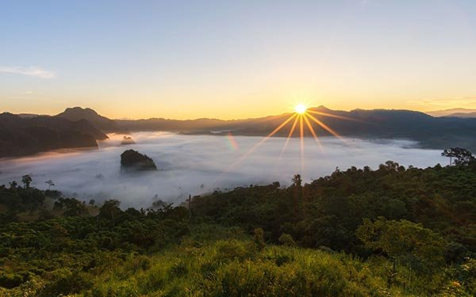

วนอุทยานภูลังกา ตั้งอยู่ภายในตำบลผาช้างน้อย อำเภอเชียงคำ และอำเภอปง จังหวัดพะเยา เป็นจุดชมวิวทะเลหมอกแห่งเดียวของจังหวัดพะเยา ชาวเขาเผ่าเย้าเรียกยอดดอยที่สูงที่สุดบนภูนี้ว่า "ฟินจาเบาะ" หมายถึง เป็นที่สถิตของนางฟ้าและเทวดา ซึ่งมีคำบอกเล่าถึงความมหัศจรรย์ว่าในวันเพ็ญขึ้น 15 ค่ำ จะมีแสงสีขาวเปล่งปลั่งเหนือยอดดอย อีกทั้งเป็นยอดดอยที่สวยงาม มีความสูง 1,720 เมตร จากระดับน้ำทะเลปานกลาง
ทั้งนี้บนยอดภูมีพื้นที่แคบจุได้ไม่เกิน 10 คน สภาพพื้นที่ส่วนใหญ่เป็นป่าดิบเขา มีต้นไม้ขนาดใหญ่จำนวนมาก ดอกไม้ป่า พันธุ์ไม้หายาก เช่น ต้นชมพูภูพาน, เนียมแดง, เอื้องสีตาล, เทียนธารา และสัตฤๅษี เป็นต้น สามารถศึกษาระบบนิเวศดั้งเดิมของป่าดิบเขาและต้นน้ำตามเส้นทางเดินเท้าศึกษาธรรมชาติ หรือชมทะเลหมอกที่สวยงาม
นอกจากนี้วนอุทยานภูลังกายังมีสถานที่น่าสนใจ ได้แก่ ดอยภูลังกา มีความสูงประมาณ 1,720 เมตร สามารถเฝ้าชมวิวทะเลเมฆหมอก ดอกไม้ป่า ชมอาทิตย์ขึ้นลงท่ามกลางทะเลภูเขาสวยงามมาก, ดอยภูลม มีความสูงประมาณ 1,600 เมตร สามารถชมวิวได้ 360 องศา, ทุ่งดอกโคลงเคลง เป็นต้นไม้พุ่ม ดอกสีม่วง มีลักษณะสวยงาม ออกดอกบานสะพรั่งในช่วงปลายฝนต้นหนาวและช่วงเทศกาลสงกรานต์ ขึ้นรวมกันเป็นทุ่งกว้างและกระจัดกระจายทั่วไปในวนอุทยานภูลังกา, หินแยงฟ้า เป็นแท่งหินยื่นโผล่ขึ้นไปบนฟ้า อยู่ปลายสุดของยอดดอยภูลังกา, ป่าก่อโบราณ, น้ำตกภูลังกา, ลานหินล้านปี และร่องรอยตำนานผู้ก่อการร้ายคอมมิวนิสต์ในอดีต